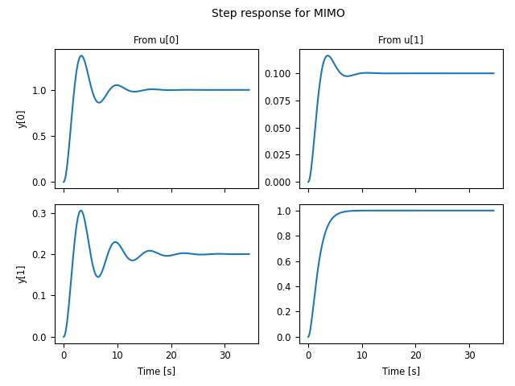
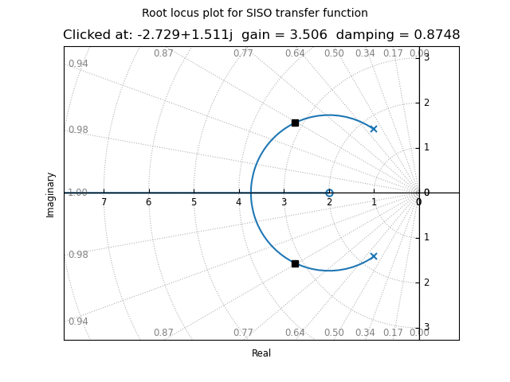

Plotting data¶
The Python Control Systems Toolbox contains a number of functions for plotting input/output responses in the time and frequency domain, root locus diagrams, and other standard charts used in control system analysis, for example:
bode_plot(sys)
nyquist_plot([sys1, sys2])
phase_plane_plot(sys, limits)
pole_zero_plot(sys)
root_locus_plot(sys)
While plotting functions can be called directly, the standard pattern used in the toolbox is to provide a function that performs the basic computation or analysis (e.g., computation of the time or frequency response) and returns and object representing the output data. A separate plotting function, typically ending in _plot is then used to plot the data, resulting in the following standard pattern:
response = ct.nyquist_response([sys1, sys2])
count = ct.response.count # number of encirclements of -1
cplt = ct.nyquist_plot(response) # Nyquist plot
Plotting commands return a ControlPlot object that
provides access to the individual lines in the generated plot using
cplt.lines, allowing various aspects of the plot to be modified to
suit specific needs.
The plotting function is also available via the plot() method of the analysis object, allowing the following type of calls:
step_response(sys).plot()
frequency_response(sys).plot()
nyquist_response(sys).plot()
pp.streamlines(sys, limits).plot()
root_locus_map(sys).plot()
The remainder of this chapter provides additional documentation on how these response and plotting functions can be customized.
Time response data¶
Input/output time responses are produced one of several python-control
functions: forced_response(),
impulse_response(), initial_response(),
input_output_response(), step_response().
Each of these return a TimeResponseData object, which
contains the time, input, state, and output vectors associated with the
simulation. Time response data can be plotted with the
time_response_plot() function, which is also available as
the plot() method. For example, the step
response for a two-input, two-output can be plotted using the commands:
sys_mimo = ct.tf2ss(
[[[1], [0.1]], [[0.2], [1]]],
[[[1, 0.6, 1], [1, 1, 1]], [[1, 0.4, 1], [1, 2, 1]]], name="sys_mimo")
response = ct.step_response(sys)
response.plot()
which produces the following plot:
The TimeResponseData object can also be used to access
the data from the simulation:
time, outputs, inputs = response.time, response.outputs, response.inputs
fig, axs = plt.subplots(2, 2)
for i in range(2):
for j in range(2):
axs[i, j].plot(time, outputs[i, j])
A number of options are available in the plot method to customize
the appearance of input output data. For data produced by the
impulse_response() and step_response()
commands, the inputs are not shown. This behavior can be changed
using the plot_inputs keyword. It is also possible to combine
multiple lines onto a single graph, using either the overlay_signals
keyword (which puts all outputs out a single graph and all inputs on a
single graph) or the overlay_traces keyword, which puts different
traces (e.g., corresponding to step inputs in different channels) on
the same graph, with appropriate labeling via a legend on selected
axes.
For example, using plot_input=True and overlay_signals=True yields the following plot:
ct.step_response(sys_mimo).plot(
plot_inputs=True, overlay_signals=True,
title="Step response for 2x2 MIMO system " +
"[plot_inputs, overlay_signals]")
Input/output response plots created with either the
forced_response() or the
input_output_response() functions include the input signals by
default. These can be plotted on separate axes, but also “overlaid” on the
output axes (useful when the input and output signals are being compared to
each other). The following plot shows the use of plot_inputs=’overlay’
as well as the ability to reposition the legends using the legend_map
keyword:
timepts = np.linspace(0, 10, 100)
U = np.vstack([np.sin(timepts), np.cos(2*timepts)])
ct.input_output_response(sys_mimo, timepts, U).plot(
plot_inputs='overlay',
legend_map=np.array([['lower right'], ['lower right']]),
title="I/O response for 2x2 MIMO system " +
"[plot_inputs='overlay', legend_map]")
Another option that is available is to use the transpose keyword so that instead of plotting the outputs on the top and inputs on the bottom, the inputs are plotted on the left and outputs on the right, as shown in the following figure:
U1 = np.vstack([np.sin(timepts), np.cos(2*timepts)])
resp1 = ct.input_output_response(sys_mimo, timepts, U1)
U2 = np.vstack([np.cos(2*timepts), np.sin(timepts)])
resp2 = ct.input_output_response(sys_mimo, timepts, U2)
ct.combine_time_responses(
[resp1, resp2], trace_labels=["Scenario #1", "Scenario #2"]).plot(
transpose=True,
title="I/O responses for 2x2 MIMO system, multiple traces "
"[transpose]")
This figure also illustrates the ability to create “multi-trace” plots
using the combine_time_responses() function. The line
properties that are used when combining signals and traces are set by
the input_props, output_props and trace_props parameters for
time_response_plot().
Additional customization is possible using the input_props, output_props, and trace_props keywords to set complementary line colors and styles for various signals and traces:
cplt = ct.step_response(sys_mimo).plot(
plot_inputs='overlay', overlay_signals=True, overlay_traces=True,
output_props=[{'color': c} for c in ['blue', 'orange']],
input_props=[{'color': c} for c in ['red', 'green']],
trace_props=[{'linestyle': s} for s in ['-', '--']])
Frequency response data¶
Linear time invariant (LTI) systems can be analyzed in terms of their
frequency response and python-control provides a variety of tools for
carrying out frequency response analysis. The most basic of these is
the frequency_response() function, which will compute
the frequency response for one or more linear systems:
sys1 = ct.tf([1], [1, 2, 1], name='sys1')
sys2 = ct.tf([1, 0.2], [1, 1, 3, 1, 1], name='sys2')
response = ct.frequency_response([sys1, sys2])
A Bode plot provide a graphical view of the response an LTI system and can
be generated using the bode_plot() function:
ct.bode_plot(response, initial_phase=0)
Computing the response for multiple systems at the same time yields a common frequency range that covers the features of all listed systems.
Bode plots can also be created directly using the
plot() method:
sys_mimo = ct.tf(
[[[1], [0.1]], [[0.2], [1]]],
[[[1, 0.6, 1], [1, 1, 1]], [[1, 0.4, 1], [1, 2, 1]]], name="sys_mimo")
ct.frequency_response(sys_mimo).plot()
A variety of options are available for customizing Bode plots, for example allowing the display of the phase to be turned off or overlaying the inputs or outputs:
ct.frequency_response(sys_mimo).plot(
plot_phase=False, overlay_inputs=True, overlay_outputs=True)
The singular_values_response() function can be used to
generate Bode plots that show the singular values of a transfer
function:
ct.singular_values_response(sys_mimo).plot()
Different types of plots can also be specified for a given frequency response. For example, to plot the frequency response using a a Nichols plot, use plot_type=’nichols’:
response.plot(plot_type='nichols')
Another response function that can be used to generate Bode plots is the
gangof4_response() function, which computes the four primary
sensitivity functions for a feedback control system in standard form:
proc = ct.tf([1], [1, 1, 1], name="process")
ctrl = ct.tf([100], [1, 5], name="control")
response = rect.gangof4_response(proc, ctrl)
ct.bode_plot(response) # or response.plot()
Nyquist analysis can be done using the nyquist_response()
function, which evaluates an LTI system along the Nyquist contour, and
the nyquist_plot() function, which generates a Nyquist plot:
sys = ct.tf([1, 0.2], [1, 1, 3, 1, 1], name='sys')
nyquist_plot(sys)
The nyquist_response() function can be used to compute
the number of encirclements of the -1 point and can return the Nyquist
contour that was used to generate the Nyquist curve.
By default, the Nyquist response will generate small semicircles around
poles that are on the imaginary axis. In addition, portions of the Nyquist
curve that are far from the origin are scaled to a maximum value, while the
line style is changed to reflect the scaling, and it is possible to offset
the scaled portions to separate out the portions of the Nyquist curve at
\infty. A number of keyword parameters for both are available for
nyquist_response() and nyquist_plot() to tune
the computation of the Nyquist curve and the way the data are plotted:
sys = ct.tf([1, 0.2], [1, 0, 1]) * ct.tf([1], [1, 0])
nyqresp = ct.nyquist_response(sys)
nyqresp.plot(
max_curve_magnitude=6, max_curve_offset=1,
arrows=[0, 0.15, 0.3, 0.6, 0.7, 0.925], label='sys')
print("Encirclements =", nyqresp.count)
All frequency domain plotting functions will automatically compute the range of frequencies to plot based on the poles and zeros of the frequency response. Frequency points can be explicitly specified by including an array of frequencies as a second argument (after the list of systems):
sys1 = ct.tf([1], [1, 2, 1], name='sys1')
sys2 = ct.tf([1, 0.2], [1, 1, 3, 1, 1], name='sys2')
omega = np.logspace(-2, 2, 500)
ct.frequency_response([sys1, sys2], omega).plot(initial_phase=0)
Alternatively, frequency ranges can be specified by passing a list of the
form [wmin, wmax], where wmin and wmax are the minimum and
maximum frequencies in the (log-spaced) frequency range:
response = ct.frequency_response([sys1, sys2], [1e-2, 1e2])
The number of (log-spaced) points in the frequency can be specified using
the omega_num keyword parameter.
Pole/zero data¶
Pole/zero maps and root locus diagrams provide insights into system
response based on the locations of system poles and zeros in the complex
plane. The pole_zero_map() function returns the poles and
zeros and can be used to generate a pole/zero plot:
sys = ct.tf([1, 2], [1, 2, 3], name='SISO transfer function')
response = ct.pole_zero_map(sys)
ct.pole_zero_plot(response)
A root locus plot shows the location of the closed loop poles of a system as a function of the loop gain:
ct.root_locus_map(sys).plot()
The grid in the left hand plane shows lines of constant damping ratio as well as arcs corresponding to the frequency of the complex pole. The grid can be turned off using the grid keyword. Setting grid to False will turn off the grid but show the real and imaginary axis. To completely remove all lines except the root loci, use grid=’empty’.
On systems that support interactive plots, clicking on a location on the root locus diagram will mark the pole locations on all branches of the diagram and display the gain and damping ratio for the clicked point below the plot title:
Root locus diagrams are also supported for discrete time systems, in which case the grid is show inside the unit circle:
sysd = sys.sample(0.1)
ct.root_locus_plot(sysd)
Lists of systems can also be given, in which case the root locus diagram for each system is plotted in different colors:
sys1 = ct.tf([1], [1, 2, 1], name='sys1')
sys2 = ct.tf([1, 0.2], [1, 1, 3, 1, 1], name='sys2')
ct.root_locus_plot([sys1, sys2], grid=False)
Phase plane plots¶
Insight into nonlinear systems can often be obtained by looking at phase
plane diagrams. The phase_plane_plot() function allows the
creation of a 2-dimensional phase plane diagram for a system. This
functionality is supported by a set of mapping functions that are part of
the phaseplot module.
The default method for generating a phase plane plot is to provide a 2D dynamical system along with a range of coordinates and time limit:
sys = ct.nlsys(
lambda t, x, u, params: np.array([[0, 1], [-1, -1]]) @ x,
states=['position', 'velocity'], inputs=0, name='damped oscillator')
axis_limits = [-1, 1, -1, 1]
T = 8
ct.phase_plane_plot(sys, axis_limits, T)
By default, the plot includes streamlines generated from starting points on limits of the plot, with arrows showing the flow of the system, as well as any equilibrium points for the system. A variety of options are available to modify the information that is plotted, including plotting a grid of vectors instead of streamlines and turning on and off various features of the plot.
To illustrate some of these possibilities, consider a phase plane plot for an inverted pendulum system, which is created using a mesh grid:
def invpend_update(t, x, u, params):
m, l, b, g = params['m'], params['l'], params['b'], params['g']
return [x[1], -b/m * x[1] + (g * l / m) * np.sin(x[0]) + u[0]/m]
invpend = ct.nlsys(invpend_update, states=2, inputs=1, name='invpend')
ct.phase_plane_plot(
invpend, [-2*pi, 2*pi, -2, 2], 5,
gridtype='meshgrid', gridspec=[5, 8], arrows=3,
plot_equilpoints={'gridspec': [12, 9]},
params={'m': 1, 'l': 1, 'b': 0.2, 'g': 1})
plt.xlabel(r"$\theta$ [rad]")
plt.ylabel(r"$\dot\theta$ [rad/sec]")
This figure shows several features of more complex phase plane plots: multiple equilibrium points are shown, with saddle points showing separatrices, and streamlines generated along a 5x8 mesh of initial conditions. At each mesh point, a streamline is created that goes 5 time units forward and backward in time. A separate grid specification is used to find equilibrium points and separatrices (since the course grid spacing of 5x8 does not find all possible equilibrium points). Together, the multiple features in the phase plane plot give a good global picture of the topological structure of solutions of the dynamical system.
Phase plots can be built up by hand using a variety of helper functions that
are part of the phaseplot (pp) module:
import control.phaseplot as pp
def oscillator_update(t, x, u, params):
return [x[1] + x[0] * (1 - x[0]**2 - x[1]**2),
-x[0] + x[1] * (1 - x[0]**2 - x[1]**2)]
oscillator = ct.nlsys(
oscillator_update, states=2, inputs=0, name='nonlinear oscillator')
ct.phase_plane_plot(oscillator, [-1.5, 1.5, -1.5, 1.5], 0.9)
pp.streamlines(
oscillator, np.array([[0, 0]]), 1.5,
gridtype='circlegrid', gridspec=[0.5, 6], dir='both')
pp.streamlines(
oscillator, np.array([[1, 0]]), 2*pi, arrows=6, color='b')
plt.gca().set_aspect('equal')
The following helper functions are available:
|
Plot equilibrium points in the phase plane. |
|
Plot separatrices in the phase plane. |
|
Plot stream lines in the phase plane. |
|
Plot a vector field in the phase plane. |
The phase_plane_plot() function calls these helper functions
based on the options it is passed.
Note that unlike other plotting functions, phase plane plots do not involve
computing a response and then plotting the result via a plot() method.
Instead, the plot is generated directly be a call to the
phase_plane_plot() function (or one of the
phaseplot helper functions.
Customizing control plots¶
A set of common options are available to customize control plots in various ways. The following general rules apply:
If a plotting function is called multiple times with data that generate control plots with the same shape for the array of subplots, the new data will be overlaid with the old data, with a change in color(s) for the new data (chosen from the standard matplotlib color cycle). If not overridden, the plot title and legends will be updated to reflect all data shown on the plot.
If a plotting function is called and the shape for the array of subplots does not match the currently displayed plot, a new figure is created. Note that only the shape is checked, so if two different types of plotting commands that generate the same shape of subplots are called sequentially, the
matplotlib.pyplot.figure()command should be used to explicitly create a new figure.The
axkeyword argument can be used to direct the plotting function to use a specific axes or array of axes. The value of theaxkeyword must have the proper number of axes for the plot (so a plot generating a 2x2 array of subplots should be given a 2x2 array of axes for theaxkeyword).The
color,linestyle,linewidth, and other matplotlib line property arguments can be used to override the default line properties. If these arguments are absent, the default matplotlib line properties are used and the color cycles through the default matplotlib color cycle.The
bode_plot(),time_response_plot(), and selected other commands can also accept a matplotlib format string (e.g.,'r--'). The format string must appear as a positional argument right after the required data argument.Note that line property arguments are the same for all lines generated as part of a single plotting command call, including when multiple responses are passed as a list to the plotting command. For this reason it is often easiest to call multiple plot commands in sequence, with each command setting the line properties for that system/trace.
The
labelkeyword argument can be used to override the line labels that are used in generating the title and legend. If more than one line is being plotted in a given call to a plot command, thelabelargument value should be a list of labels, one for each line, in the order they will appear in the legend.For input/output plots (frequency and time responses), the labels that appear in the legend are of the form “<output name>, <input name>, <trace name>, <system name>”. The trace name is used only for multi-trace time plots (for example, step responses for MIMO systems). Common information present in all traces is removed, so that the labels appearing in the legend represent the unique characteristics of each line.
For non-input/output plots (e.g., Nyquist plots, pole/zero plots, root locus plots), the default labels are the system name.
If
labelis set toFalse, individual lines are still given labels, but no legend is generated in the plot. (This can also be accomplished by settinglegend_maptoFalse).Note: the
labelkeyword argument is not implemented for describing function plots or phase plane plots, since these plots are primarily intended to be for a single system. Standardmatplotlibcommands can be used to customize these plots for displaying information for multiple systems.The
legend_loc,legend_mapandshow_legendkeyword arguments can be used to customize the locations for legends. By default, a minimal number of legends are used such that lines can be uniquely identified and no legend is generated if there is only one line in the plot. Settingshow_legendtoFalsewill suppress the legend and setting it toTruewill force the legend to be displayed even if there is only a single line in each axes. In addition, if the value of thelegend_lockeyword argument is set to a string or integer, it will set the position of the legend as described in thematplotlib.legend()documentation. Finally,legend_mapcan be set to an array that matches the shape of the subplots, with each item being a string indicating the location of the legend for that axes (orNonefor no legend).The
rcParamskeyword argument can be used to override the default matplotlib style parameters used when creating a plot. The default parameters for all control plots are given by thect.rcParamsdictionary and have the following values:Key
Value
‘axes.labelsize’
‘small’
‘axes.titlesize’
‘small’
‘figure.titlesize’
‘medium’
‘legend.fontsize’
‘x-small’
‘xtick.labelsize’
‘small’
‘ytick.labelsize’
‘small’
Only those values that should be changed from the default need to be specified in the
rcParamskeyword argument. To override the defaults for all control plots, update thect.rcParamsdictionary entries.The default values for style parameters for control plots can be restored using
reset_rcParams().For multi-input, multi-output time and frequency domain plots, the sharex and sharey keyword arguments can be used to determine whether and how axis limits are shared between the individual subplots. Setting the keyword to ‘row’ will share the axes limits across all subplots in a row, ‘col’ will share across all subplots in a column, ‘all’ will share across all subplots in the figure, and False will allow independent limits for each subplot.
For Bode plots, the share_magnitude and share_phase keyword arguments can be used to independently control axis limit sharing for the magnitude and phase portions of the plot, and share_frequency can be used instead of sharex.
The
titlekeyword can be used to override the automatic creation of the plot title. The default title is a string of the form “<Type> plot for <syslist>” where <syslist> is a list of the sys names contained in the plot (which can be updated if the plotting is called multiple times). Usetitle=Falseto suppress the title completely. The title can also be updated using theset_plot_title()method for the returned control plot object.The plot title is only generated if
axisNone.
The following code illustrates the use of some of these customization features:
P = ct.tf([0.02], [1, 0.1, 0.01]) # servomechanism
C1 = ct.tf([1, 1], [1, 0]) # unstable
L1 = P * C1
C2 = ct.tf([1, 0.05], [1, 0]) # stable
L2 = P * C2
plt.rcParams.update(ct.rcParams)
fig = plt.figure(figsize=[7, 4])
ax_mag = fig.add_subplot(2, 2, 1)
ax_phase = fig.add_subplot(2, 2, 3)
ax_nyquist = fig.add_subplot(1, 2, 2)
ct.bode_plot(
[L1, L2], ax=[ax_mag, ax_phase],
label=["$L_1$ (unstable)", "$L_2$ (unstable)"],
show_legend=False)
ax_mag.set_title("Bode plot for $L_1$, $L_2$")
ax_mag.tick_params(labelbottom=False)
fig.align_labels()
ct.nyquist_plot(L1, ax=ax_nyquist, label="$L_1$ (unstable)")
ct.nyquist_plot(
L2, ax=ax_nyquist, label="$L_2$ (stable)",
max_curve_magnitude=22, legend_loc='upper right')
ax_nyquist.set_title("Nyquist plot for $L_1$, $L_2$")
fig.suptitle("Loop analysis for servomechanism control design")
plt.tight_layout()
As this example illustrates, python-control plotting functions and
Matplotlib plotting functions can generally be intermixed. One type of
plot for which this does not currently work is pole/zero plots with a
continuous time omega-damping grid (including root locus diagrams), due to
the way that axes grids are implemented. As a workaround, the
pole_zero_subplots() command can be used to create an array
of subplots with different grid types, as illustrated in the following
example:
ax_array = ct.pole_zero_subplots(2, 1, grid=[True, False])
sys1 = ct.tf([1, 2], [1, 2, 3], name='sys1')
sys2 = ct.tf([1, 0.2], [1, 1, 3, 1, 1], name='sys2')
ct.root_locus_plot([sys1, sys2], ax=ax_array[0, 0])
cplt = ct.root_locus_plot([sys1, sys2], ax=ax_array[1, 0])
cplt.set_plot_title("Root locus plots (w/ specified axes)")
Alternatively, turning off the omega-damping grid (using grid=False or
grid='empty') allows use of Matplotlib layout commands.
Response and plotting functions¶
Response functions¶
Response functions take a system or list of systems and return a response
object that can be used to retrieve information about the system (e.g., the
number of encirclements for a Nyquist plot) as well as plotting (via the
plot method).
|
Compute the describing function response of a system. |
|
Frequency response of an LTI system at multiple angular frequencies. |
|
Compute the output of a linear system given the input. |
|
Compute the response of the "Gang of 4" transfer functions for a system. |
|
Compute the impulse response for a linear system. |
|
Compute the initial condition response for a linear system. |
|
Compute the output response of a system to a given input. |
|
Nyquist response for a system. |
|
Compute the pole/zero map for an LTI system. |
|
Compute the root locus map for an LTI system. |
|
Singular value response for a system. |
|
Compute the step response for a linear system. |
Plotting functions¶
|
Bode plot for a system. |
|
Plot a Nyquist plot with a describing function for a nonlinear system. |
|
Nichols plot for a system. |
|
Nyquist plot for a system. |
|
Plot phase plane diagram. |
|
Plot equilibrium points in the phase plane. |
|
Plot separatrices in the phase plane. |
|
Plot stream lines in the phase plane. |
|
Plot a vector field in the phase plane. |
|
Plot a pole/zero map for a linear system. |
|
Root locus plot. |
|
Plot the singular values for a system. |
|
Plot the time response of an input/output system. |
Utility functions¶
These additional functions can be used to manipulate response data or carry out other operations in creating control plots.
|
Generate list of points along the edge of box. |
|
Combine multiple individual time responses into a multi-trace response. |
|
Create axes for pole/zero plot. |
Reset rcParams to default values for control plots. |
Response and plotting classes¶
The following classes are used in generating response data.
|
A class for returning control figures. |
|
Results of describing function analysis. |
|
A class for models defined by frequency response data (FRD). |
|
|
|
Nyquist response data object. |
|
Pole/zero data object. |
|
A class for returning time responses. |
|
This class consist of a list of |